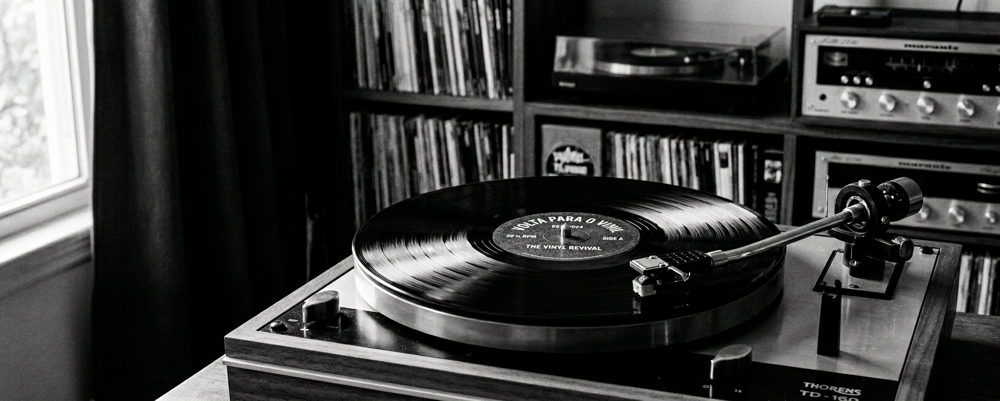

O que é o De Volta para o Vinil?
O site De Volta para o Vinil tem como foco a divulgação de vinis de artistas consagrados ou
não e que
possuem o seu trabalho musical em disco de vinil. Além disso aqui você irá encontrar histórias
fascinantes sobre as obras, divulgação de feiras de vinil que ocorrem pelas principais cidades,
cobertura de alguns encontros pela equipe do site, além de muitas novidades, música e boas
histórias!
Já escutou um disco de vinil hoje?
Quem faz?
A equipe do De Volta para o Vinil é formada por apaixonados pela música, colecionadores dedicados e profissionais da indústria fonográfica que compartilham um mesmo sonho: manter viva a magia dos discos de vinil. Entre eles está Diego, grande entusiasta desse universo, que transforma sua paixão pela música em histórias, descobertas e experiências para dividir com outros amantes do vinil. Mais do que um formato musical, o vinil representa momentos, memórias e uma conexão única entre gerações através da arte e da sonoridade incomparável.
Com um olhar carinhoso para a história da música, nossa missão é preservar e compartilhar o legado dos discos que marcaram épocas e influenciaram artistas ao redor do mundo. Cada álbum guarda emoções, contextos culturais e lembranças especiais que merecem continuar sendo redescobertas por novos ouvintes e colecionadores.
No De Volta para o Vinil, buscamos criar um espaço acolhedor e inspirador para todos que amam música. Aqui você encontra análises de álbuns, curiosidades sobre artistas, informações sobre prensagens raras e conteúdos que celebram a evolução musical ao longo das décadas. Nosso objetivo é aproximar pessoas através dessa paixão em comum e tornar cada visita uma experiência nostálgica e envolvente.
Acreditamos que o vinil vai muito além da música: ele é um símbolo de autenticidade, apreciação artística e conexão emocional. Por isso, trabalhamos diariamente para fortalecer essa cultura e inspirar tanto colecionadores experientes quanto novos admiradores a explorarem o fascinante universo dos discos de vinil.
O que vai ter por aqui!
Em breve, você encontrará aqui uma ampla seleção de discos de vinil, notícias sobre a cena do vinil, entrevistas com artistas e muito mais!
Contato
Entre em contato conosco através do formulário abaixo ou pelos canais de comunicação disponíveis.